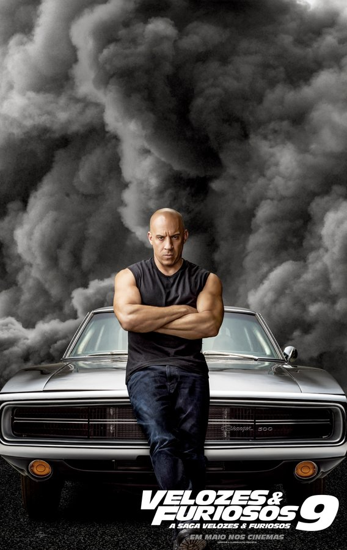
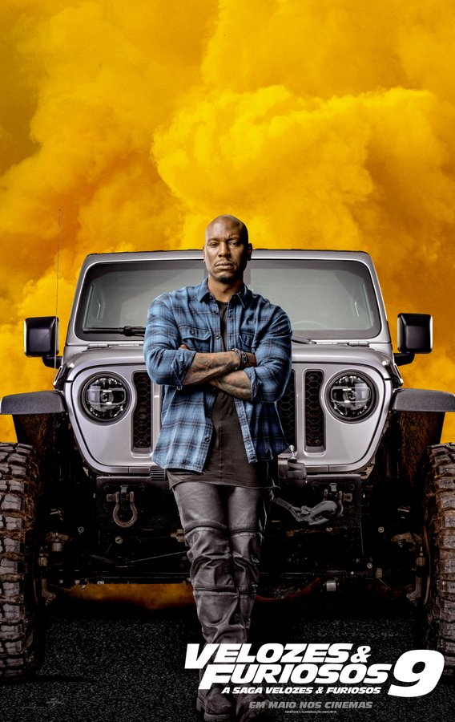
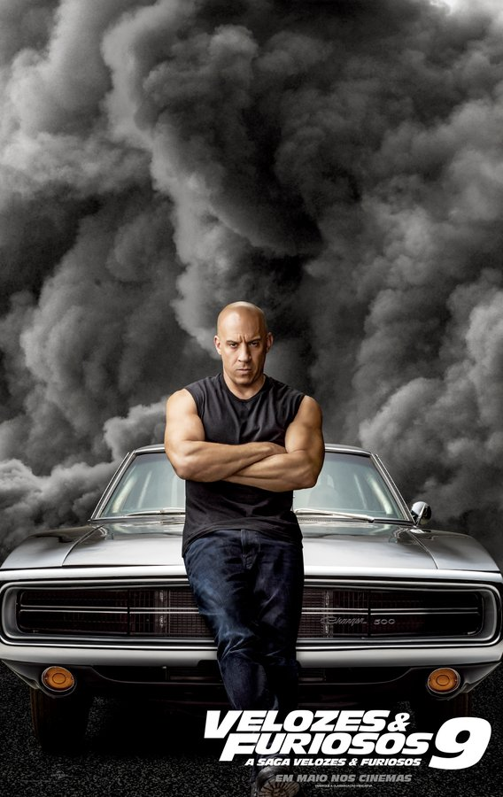
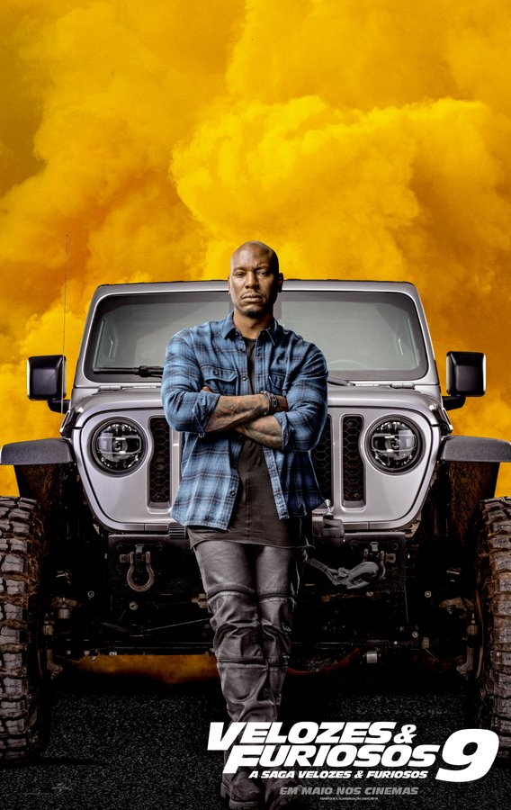

A história da épica saga!

A trama de Velozes e Furiosos acompanha Brian O' Connor, um policial que se infiltra nas corridas de carro ilegais para prender o criminoso Dominic Toretto. Suas ações, no entanto, mudam de direção quando ele se apaixona pela irmã de Dominic, pelas corridas e pelo grupo de amigos que faz.
 


